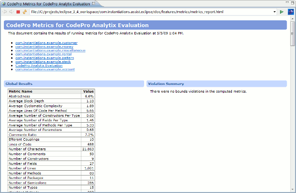

Metrics
Each
time the menu item Options are provided via a preference
page to enable or disable individual metrics and set various
violation thresholds and trigger points. |
||||
The Metrics TableThe metrics table (shown on the left in the picture below) contains a list of the metrics that have been run and the results of running those metrics against the target elements. The name of the metric is shown in the first column. The value of the metric result is shown in the second column. |
||||
The individual metrics may be expanded (drill down) to show the value of that metric at each subscope (project, package and type). Any metrics that have exceeded their user defined thresholds and trigger points are shown highlighted in red (or any other color settable via the preference page).
Right-clicking on any metric with show the following menu:
|
Double clicking on a compilation unit will open it up in an editor.
If a subscope is selected within a metric, the
"Go Into" command will refocus the entire
metrics view on that scope as the top level. The  "Go Back" and
"Go Back" and  "Go Forward" buttons may then be used to
go forward and backward through the selected scopes.
"Go Forward" buttons may then be used to
go forward and backward through the selected scopes.
The context menu contains a "Copy to Clipboard" item that will allow you to capture the currently visible results on the clipboard so that they can be pasted into e-mail messages, text documents, HTML documents, XML documents or even a spreadsheet application.
The "Export Results" items allows you to save the currently visible results directly to a text file in simple text, tab separated, comma separated, HTML or XML format (shown below).

A sample XML report is shown below.
The "E-mail Results" items allows you to e-mail the currently visible results as a text file in simple text, tab separated, comma separated, HTML or XML format
The "Explain" command will show a description of the selected metric.

The "Disable Metric" command will disable the selected metrics in the current metric set. The "Configure Metric" command will open up a dialog allowing you to configure the selected metric.
The Detail Chooser
Selecting an individual metric result will cause the detail chooser (the drop-down list shown at the top on the right side above) to be populated with a list of the kinds of details available about the selected metric result. The specific list of details that are available depends on the metric.
The Detail View
Selecting a detail will cause the detail view (immediately below the detail chooser) to be populated with a view of the specified details. The detail view is read-only and specific to the selected metric.

Some details are shown in table form while others are shown as graphs.
 Go Back
Go Back
Restores the view to the previously visible scoping level, if there was one.
 Go Forward
Go Forward
Limits the view to the scoping level of the currently selected item.
 The Remove Current Metric Button
The Remove Current Metric Button
Clicking on the Remove Current Metric button will cause the currently visible set of results to be discarded. This operation cannot be undone.
 The Remove All Results Button
The Remove All Results Button
Clicking on the Remove All Metrics button will cause all of the sets of results to be discarded. This operation cannot be undone.
 The Previous Metric Results Button
The Previous Metric Results Button
Clicking on the arrow beside the Previous Metric Results button will cause a menu containing the most recently run metrics to be displayed. If there are additional sets of metric results available but not included on the menu, a menu item labeled "Other" will also be on the menu. Selecting one of the result sets from the list will make the metrics view show the content of the selected result set.
Either clicking on the history icon for the Previous Metric Results button, or selecting "Other" from the drop-down menu, will cause a dialog to open in which you can select the result set that you would like to view. This dialog contains a complete list of all available result sets.
Result sets are not persisted beyond a single execution of the workbench.
The "Export" option can be used to export the currently selected result set to an XML file that can be loaded in later.
The "Import" option can be used to import a result set from an XML file.